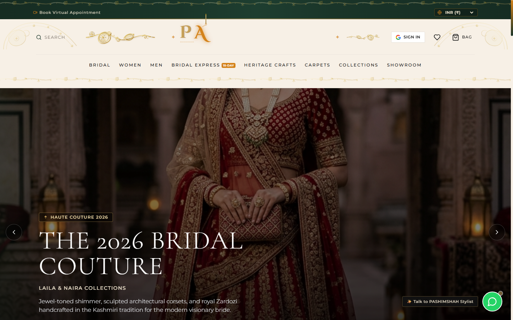

01 / 04
HAUTE COUTURE & LUXURY ATELIER
VERCEL DEPLOYED
PASHIM SHAH (A.K Couture)
Kashmiri Bridal Couture & Heritage Atelier
A bespoke high-fashion digital atelier dedicated to luxury Kashmiri bridal wear, handcrafted Tilla embroidery, Kashidakari, Zardozi, and Chikankari. Built for a global clientele with dynamic multi-currency purchasing, made-to-measure styling consultations, and interactive artisan lookbooks.
✦
Global Checkout: Native currency switching across 8 international currencies with localized pricing.
✦
Virtual Styling: Interactive consultation scheduler for custom bride-to-be garment fittings.
✦
Editorial UI: Kashmiri heritage typography and luxury gold-onyx aesthetic.
React
Vite
Tailwind CSS
Multi-Currency Engine
Vercel Edge
Lucide Icons
